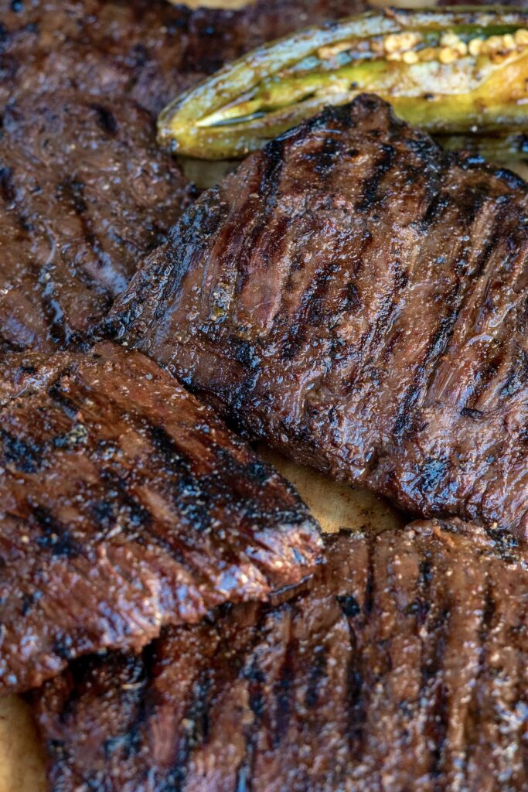

Carne Asada

Carne Asade is a traditional Mexican grilled beef dish that is often served
in tacos, burritos, or as a main entree. This recipe calls for marinated
flank steak, seasoned with a flavorful mix of citrus, garlic, cumin, and
chili powder, then grilled to perfection. This results in a tender, juicy
meat, with a smoky char, perfect for any Mexican-inspired meal.
Ingredients
- 2lbs flank steak
- 4 garlic cloves
- 1 tbsp coarse salt
- 1/4 onion, sliced
- 2 tsp chili powder
- 1 tsp garlic powder
- 1 tsp Mexican oregano
- 1 tsp cumin
- 1 tsp black pepper
- 1 tsp onion powder
- 2 tsp white vinegar
- 1/4 cup lime juice (about 2 limes)
- 1/4 cup orange juice (about 1 small orange)
- 1/4 cup olive oil
- 1/4 cup light beer
- 1-2 jalepeno, cut in half lengthwise
- 1/4 bunch cilantro
Steps
- Over medium low heat, roast the garlic cloves (with the skin on)
in a pan and cover for 5 minutes or until the garlic is soft and
browned on all sides.
- add the roasted garlic to a mortar with 1 tbsp of salt.
Grind to make a garlic salt paste.
- Add chopped onion and lightly press with the pestle to release some juices.
- Add the vinegar, lime juice, orange juice, olive oil, beer, and spices.
Mix well by scraping the bottom of the mortar to make sure you're
incorporating all of the garlic salt paste.
- Mix in the cilantro and jalapeno.
- Trim off the silver skin membrane and any excess hard pieces of fat,
but not too much because fat = flavor. Cut into 5 inch pieces
- Pour marinade over the skirt steak in a container and massage into the steak.
Marinade in the refrigerator for 2-4 hours. Take the marinated steak out of
the refrigerator and let it rest at room temperature for 30 minutes before
you cook it.
- Shake off excess marinade and grill over SCORCHING high hear for 3 to 4 minutes
per side for medium rare. Note: can also cook on a cast iron skillet
- Let the steak rest for 5 minutes on a cool surface before cutting into it!
- Cut the steak against the grain and enjoy
Home